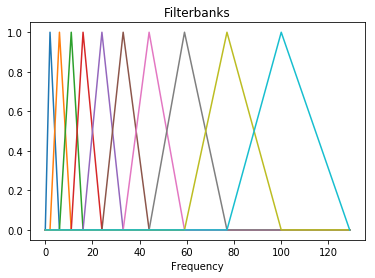

afx.features package¶
Submodules¶
afx.features.fractal module¶
Fractal dimension features have historically been successful in discriminating sleep stages or other EEG signal classes. Here we return a feature matrix based on various definitions of fractal dimension.
-
afx.features.fractal.higuchi(X, kmax=7)[source]¶ Calculate the Higuchi fractal dimension. The Higuchi exponent is considered to be a measure of the irregularity of a time series. Original matlab code by Salai Selvam V. can be seen here.
Parameters: - X (numpy.ndarray) – Single time series.
- kmax (int) – Number of times to resample the series.
Returns: Higuchi fractal dimension.
Return type: Raises: ValueError– If kmax is too large or signal is too short.ZeroDivisionError– If means of chunks are zero.
Examples
As explained in the examples for
hjorth(), the fractal dimension of an autoregressive time series with gaussian noise is theorized to be 1.5.We can first create such a time series with the following:
>>> import numpy as np >>> seed = 5715005 >>> np.random.seed(seed) >>> >>> n = 1000 >>> gauss_series = np.zeros(n) >>> gauss_noise = np.random.normal(size = n) >>> gauss_series[0] = np.sum(gauss_noise) >>> >>> for i in range(1, n): ... gauss_series[i] += gauss_series[i-1] + np.random.normal(size = 1)
Now we can test to see if the Higuchi fractal dimension is close to 1.5.
>>> from afx.features.fractal import higuchi >>> np.round(higuchi(gauss_series), 2) 1.49
-
afx.features.fractal.hjorth(X, kmax=5)[source]¶ Compute Hjorth fractal dimension of a time series. This code was taken from pyEEG. Hjorth FD is essentially re-sampling (or decimating) the time series and checking if we have similar curves. The similarity measure is a function of the mean value for each version of the series. \(k_{\mathrm{max}}\) is the scale size (or time offset). So the algorithm compares kmax versions of the epoch for similarity. The first version skips every other datapoint, the second skips every 2 datapoints, and the kmax skips kmax datapoints at a time.
Parameters: - X (numpy.ndarray) – Single time series.
- kmax (float) – Basically the scale size or time offset; creates kmax versions of your time series. The k-th series is every k-th time of the original series.
Returns: Hjorth fractal dimension.
Return type: Raises: ValueError– If kmax is too large or signal is too short.ZeroDivisionError– If means of chunks are zero.
Examples
Higuchi theorized that the fractal dimension of a time series where each value is equal to the previous value plus some gaussian noise would be around 1.5.
Such a time series can be produced with the following:
>>> import numpy as np >>> seed = 5715005 >>> np.random.seed(seed) >>> >>> n = 1000 >>> gauss_series = np.zeros(n) >>> gauss_noise = np.random.normal(size = n) >>> gauss_series[0] = np.sum(gauss_noise) >>> >>> for i in range(1, n): ... gauss_series[i] += gauss_series[i-1] + np.random.normal(size = 1)
Now we can test to see if the Hjorth fractal dimension is close to 1.5.
>>> from afx.features.fractal import hjorth >>> np.round(hjorth(gauss_series), 2) 1.49
-
afx.features.fractal.hurst(X)[source]¶ Returns the Hurst exponent of the time series vector. Hurst is a measure of long-term memory in a time series that is not due to periodicity. It’s often used as a measure of how stationary a time series is.
Parameters: X (numpy.ndarray) – Single time series.
Returns: - Rate at which the autocorrelation in a time series decreases as the
lags increase. If the series \(x(t)\) is a self-similar fractal, then \(x(bt)\) is statistically equivalent to \(b^Hx(t)\), where H is the Hurst exponent.
Return type: Raises: ValueError– If signal contains less than 21 data points.ZeroDivisionError– If variances for lagged differences are zero.
Examples
For stationary, periodic curves, the fractal dimension of a times series can be estimated as 2-H where H is the Hurst exponent. We can test this by calculating the Hurst exponent for the Weierstrass Function, which has a theoretical fractal dimension of 1.5.
>>> import numpy as np >>> from afx.features.fractal import hurst >>> gamma = 5 >>> M = 27 >>> H = 0.5 >>> tt = np.arange(0, 2000)/1333 >>> weierstrass = np.zeros(len(tt)) >>> >>> for i in range(M): ... weierstrass += gamma**(-i*H) * np.cos(2*np.pi*gamma**i*tt) >>> >>> 2 - np.round(hurst(weierstrass), 2) 1.47
-
afx.features.fractal.katz(X)[source]¶ Calculate the Katz fractal dimension. Example.
Note
The Katz fractal dimension is calculated in such a way that it will not be lower than 1. However, for increasingly complex signals, the Katz fractal dimension will continue to grow beyond what one would consider to be a reasonable value for the dimension of a time series. In addition, the Katz fractal dimension will almost always be close to 1 except for more complex signals.
Parameters: X (numpy.ndarray) – Single time series. Returns: Katz fractal dimension; \(\frac{\log(n)}{\log(n) + \log(\frac{d}{L})}\), where \(L\) is extent of first point to furthest point, \(d\) is length of time series. Return type: float Raises: ValueError– If signal contains less than 3 data points.Examples
The Weierstrass Function has a theoretical fractal dimension of 1.5. A fairly simple curve using the Weierstrass Function can be generated as follows:
>>> gamma = 5 >>> M = 27 >>> H = 0.9 >>> tt = np.arange(0, 2000)/1333 >>> weierstrass = np.zeros(len(tt)) >>> >>> for i in range(M): ... weierstrass += gamma**(-i*H) * np.cos(2*np.pi*gamma**i*tt)
Then we can calculate the Katz fractal dimension with the following:
>>> from afx.features.fractal import katz >>> np.round(katz(weierstrass), 4) 1.0
We can generate a more complex curve using the Weierstrass Function with H of 0.2.
>>> H = 0.2 >>> weierstrass = np.zeros(len(tt)) >>> >>> for i in range(M): ... weierstrass += gamma**(-i*H) * np.cos(2*np.pi*gamma**i*tt)
Now our estimate of the Katz fractal dimension has increased.
>>> np.round(katz(weierstrass), 4) 1.0159
However in order to really see a large value for the Katz fractal dimension, we can try producing a time series composed completely of random draws from a Gaussian distribution with mean 0 and standard deviation 20.
>>> np.random.seed(100) >>> gaussian_draws = np.random.normal(0, 20, 1000) >>> np.round(katz(gaussian_draws)) 1.853
-
afx.features.fractal.petrosian(X, D=None)[source]¶ Compute Petrosian fractal dimension. Petrosian’s algorithm translates the series into a binary sequence (a vector of +1 and -1 values). \(\frac{\log_{10}(n)}{\log_{10}(n) + \log_{10}(\frac{n}{n + 0.4 N_\Delta})}\). This code was adapted from pyEEG, 0.02 r1: http://pyeeg.sourceforge.net/.
Note
The Petrosian fractal dimension is bounded between 1 and 1.05 and therefore cannot give values we would believe are close to the actual fractal dimension of a time series. However, the differences within that range might be useful for investigating certain phenomenon.
Parameters: - X (numpy.ndarray) – Single time series.
- D (numpy.ndarray) – First order differential sequence of X;
if not provided, D is computed by
numpy.diff().
Returns: Petrosian fractal dimension.
Return type: Raises: ValueError– If signal contains less than 2 data points.Examples
We can first simulate a simple sine wave in the following way:
>>> import numpy as np >>> tt = np.arange(-2000, 2000)/1000 >>> sine_curve = np.sin(2*np.pi*tt)
A sine wave should have a fractal dimension of 1. Since this is within the appropriate range for the Petrosian fractal dimension, we can test this with:
>>> from afx.features.fractal import petrosian >>> np.round(petrosian(sine_curve), 4) 1.0001
afx.features.mfcc module¶
This module contains all of the functions necessary for computing the Mel-Frequency Cepstral Coefficients.
-
exception
afx.features.mfcc.FrameError[source]¶ Bases:
ExceptionError raised when frames input is of incorrect type or dimension.
-
exception
afx.features.mfcc.WindowError[source]¶ Bases:
ExceptionError raised when window function does not accept correct arguments or it does not a valid return value.
-
afx.features.mfcc.fbank(signal, sample_rate=16000, win_len=0.025, win_step=0.01, nfilt=26, nfft=512, low_freq=0, high_freq=None, pre_emph=0.97, win_func=<function <lambda>>)[source]¶ Compute Mel-filterbank energy features from an audio signal. Code was adapted from here.
Parameters: - signal (numpy.ndarray) – Audio signal from which to compute features. Should be an N*1
numpy.ndarray. - sample_rate (int, float) – Sample rate of the signal we are working with.
- win_len (float) – Length of the analysis window in seconds. Default is 0.025s (25 milliseconds)
- win_step (float) – Step between successive windows in seconds. Default is 0.01s (10 milliseconds)
- nfilt (int, float) – Number of filters in the filterbank, default 26.
- nfft (int, float) – FFT size. Default is 512.
- low_freq (int, float) – Lowest band edge of mel filters. In Hz, default is 0.
- high_freq (int, float) – Highest band edge of mel filters. In Hz, default is sample_rate/2
- pre_emph (float) – Apply preemphasis filter with pre_emph as coefficient. 0 is no filter. Default is 0.97.
- win_func (function) – Analysis window to apply to each frame. By default no window is applied.
Returns: Numpy array of size (num_frames by nfilt) containing features. Each row holds 1 feature vector.
Return type: - signal (numpy.ndarray) – Audio signal from which to compute features. Should be an N*1
-
afx.features.mfcc.framesig(signal, frame_len, frame_step, winfunc=<function <lambda>>)[source]¶ Frame signal into overlapping frames. Code was adapted from here.
Parameters: - signal (numpy.ndarray) – Audio signal from which to compute features. Should be an N*1
numpy.ndarray. - frame_len (int, float) – Length of each frame measured in samples.
- frame_step (int, float) – Number of samples after the start of the previous frame that the next frame should begin.
- win_func (function) – Analysis window to apply to each frame. By default no window is applied.
Returns: A class:numpy.ndarray of frames. Size is num_frames by frame_len.
Return type: - signal (numpy.ndarray) – Audio signal from which to compute features. Should be an N*1
-
afx.features.mfcc.get_filterbanks(nfilt=20, nfft=512, sample_rate=16000, low_freq=0, high_freq=None)[source]¶ Compute a Mel-filterbank. The filters are stored in the rows, the columns correspond to fft bins. The filters are returned as an array of size nfilt * (nfft/2 + 1). Code was adapted from here.
Parameters: - sample_rate (int, float) – Sample rate of the signal we are working with.
- nfilt (int) – Number of filters in the filterbank, default 26.
- nfft (int) – FFT size. Default is 512.
- low_freq (int, float) – Lowest band edge of mel filters. In Hz, default is 0.
- high_freq (int, float) – Highest band edge of mel filters. In Hz, default is sample_rate/2
- Returns
- numpy.ndarray: A class:numpy.ndarray of size nfilt * (nfft/2 + 1) containing filterbank. Each row holds 1 filter.
Examples
Filterbanks for calculating the Mel-Frequency Cepstral Coefficients can be obtained in the following way:
>>> import matplotlib.pyplot as plt >>> import afx.features.mfcc as mfcc >>> fil_banks = mfcc.get_filterbanks(nfilt=10, nfft=258) >>> for fbank in fil_banks: ... plt.plot(fbank) >>> plt.title('Filterbanks') >>> plt.xlabel('Frequency')

-
afx.features.mfcc.hz2mel(hz)[source]¶ Convert a value in Hertz to Mels. For more information, you can go to this tutorial.
Parameters: hz (int, float, numpy.ndarray) – A value in Hz. This can also be a class:numpy.ndarray, conversion proceeds element-wise. Returns: A value in Mels. If an array was passed in, an identical sized array is returned. Return type: numpy.ndarray
-
afx.features.mfcc.lifter(cepstra, L=22)[source]¶ Apply a cepstral lifter to the matrix of cepstra. This has the effect of increasing the magnitude of the high frequency DCT coeffs. Code was adapted from here.
Parameters: - cepstra (numpy.ndarray) – Matrix of mel-cepstra, will be num_frames * num_cep in size.
- L (int, float) – Liftering coefficient to use. Default is 22. L <= 0 disables lifter.
Returns: Liftered matrix of mel-cepstra.
Return type:
-
afx.features.mfcc.magspec(frames, nfft)[source]¶ Compute the magnitude spectrum of each frame in frames. If frames is an NxD matrix, output will be Nx(NFFT/2+1). Code was adapted from here.
Parameters: - frames (numpy.ndarray) – The array of frames. Each row is a frame.
- nfft (int, float) – The FFT length to use. If nfft > frame_len, the frames are zero-padded.
Returns: - If frames is an NxD matrix, output will be Nx(nfft/2+1).
Each row will be the magnitude spectrum of the corresponding frame.
Return type:
-
afx.features.mfcc.mel2hz(mel)[source]¶ Convert a value in Mels to Hertz. For more information, you can go to this tutorial.
Parameters: mel (numpy.ndarray) – A value in Mels. This can also be a class:numpy.ndrray, conversion proceeds element-wise. Returns: A value in Hertz. If an array was passed in, an identical sized array is returned. Return type: numpy.ndarray
-
afx.features.mfcc.mfcc(signal, sample_rate=16000, win_len=0.025, win_step=0.01, num_cep=13, nfilt=26, nfft=512, low_freq=0, high_freq=None, pre_emph=0.97, cep_lifter=22, win_func=<function <lambda>>)[source]¶ Compute the MFCC features from an audio signal. Code was adapted from here.
Parameters: - signal (numpy.ndarray) – Audio signal from which to compute features. Should be an N*1
numpy.ndarray. - sample_rate (int, float) – Sample rate of the signal we are working with.
- win_len (float) – Length of the analysis window in seconds. Default is 0.025s (25 milliseconds)
- win_step (float) – Step between successive windows in seconds. Default is 0.01s (10 milliseconds)
- num_cep (int) – Number of cepstrum to return, default 13
- nfilt (int) – Number of filters in the filterbank, default 26.
- nfft (int) – FFT size. Default is 512.
- low_freq (int, float) – Lowest band edge of mel filters. In Hz, default is 0.
- high_freq (int, float) – Highest band edge of mel filters. In Hz, default is sample_rate/2
- pre_emph (float) – Apply preemphasis filter with pre_emph as coefficient. 0 is no filter. Default is 0.97.
- cep_lifter (int, float) – Apply a lifter to final cepstral coefficients. 0 is no lifter. Default is 22.
- win_func (function) – Analysis window to apply to each frame. By default no window is applied.
Returns: A numpy array of size (num_frames by num_cep) containing features. Each row holds 1 feature vector.
Return type: - signal (numpy.ndarray) – Audio signal from which to compute features. Should be an N*1
-
afx.features.mfcc.powspec(frames, nfft)[source]¶ Compute the power spectrum of each frame in frames. If frames is an NxD matrix, output will be Nx(NFFT/2+1). Code was adapted from here.
Parameters: - frames (numpy.ndarray) – The array of frames. Each row is a frame.
- nfft (int, float) – The FFT length to use. If nfft > frame_len, the frames are zero-padded.
Returns: - If frames is an NxD matrix, output will be Nx(nfft/2+1).
Each row will be the power spectrum of the corresponding frame.
Return type:
-
afx.features.mfcc.preemphasis(signal, coeff=0.95)[source]¶ Perform preemphasis on input signal. Code was adapted from here.
Parameters: - signal (numpy.ndarray) – Audio signal from which to compute features. Should be an N*1
numpy.ndarray. - coeff (float) – The preemphasis coefficient. 0 is no filter, default is 0.95.
Returns: The filtered signal.
Return type: - signal (numpy.ndarray) – Audio signal from which to compute features. Should be an N*1
afx.features.signal module¶
This module contains several functions that can be used to extract useful features from audio signals.
-
exception
afx.features.signal.OutputError[source]¶ Bases:
ExceptionError when output is not reasonable.
-
afx.features.signal.energy(signal)[source]¶ Computes the energy of discrete input signal.
Parameters: signal (numpy.ndarray) – Input signal. Returns: Energy of input signal signal. Return type: float Raises: OutputError– If energy is too large and an overflow occurs.Examples
The energy of the commonly used normalized sinc function is one. We can investigate this claim with the following:
>>> import numpy as np >>> from afx.features.signal import energy as energy >>> tt = np.arange(-1000, 1000) >>> signal = np.sinc(tt) >>> energy(signal) 1.0
Furthermore, for an unnormalized sinc function, the energy should be very close to \(\pi\).
>>> import numpy as np >>> from afx.features.signal import energy as energy >>> tt = np.arange(-20000, 20000) >>> signal = np.sinc(tt/np.pi) >>> np.round(energy(signal), 5) 3.14154
-
afx.features.signal.formant_peak(signal, min_peak_dist=1)[source]¶ Simple peak picking algorithm to see if proposed value for peak is bigger than neighboring values on each side. Code was adapted from a Matlab function that is part of the COVAREP project. For more information, you can go to here.
Parameters: - signal (numpy.ndarray) – Signal for which peaks are to be found.
- min_peak_dist (int, float, str) – Minimum distance between peaks. Defaults to 1.
Returns: Array of indices for locations of peaks in signal.
Return type: Raises: PeakError– If peaks weren’t found in signal.TypeError– If min_peak_dist is not a valid integer, float, or string.ValueError– If min_peak_dist is less than or equal to zero or if input is too short.
Examples
We can test this function using a simple sine wave.
>>> import numpy as np >>> from afx.features.signal import formant_peak as formant_peak >>> tt = np.arange(0, 10000)/100 >>> sine_wave = np.sin(tt) >>> formant_peak(sine_wave) array([ 157, 785, 1414, 2042, 2670, 3299, 3927, 4555, 5184, 5812, 6440, 7069, 7697, 8325, 8954, 9482])
-
afx.features.signal.formants(signal, sample_rate, frame_size=30, frame_shift=10)[source]¶ Computes the first 5 formants of input signal. Code was adapted from a Matlab function that is part of the COVAREP project. Further details can be found here.
Parameters: Returns: Two-dimensional array containing values for first 5 formants of signal.
Return type: Raises: ValueError– If frame_size or frame_shift result in window that is too large.Examples
Assuming that signal is a one-dimensional
numpy.ndarrayfrom an audio file that was sampled at 16000 Hz, we can useformants()to track the first five formants with the following:>>> from afx.features.signal import formants as formants >>> sample_rate = 16000 >>> formants(signal, sample_rate)
afx.features.stt module¶
Here we have a suite of functions that extract different features from audio files as well as perform other useful tasks for analyzing speech.
-
afx.features.stt.audio_features(audio_file, auth_file, language='en-US_BroadbandModel', watson_learn=False, phonemes=True)[source]¶ Takes an audio file and uses the IBM Watson Speech to Text API to transcribe the audio into text and then extracts words along with desired features for each word. Format of audio files must be one of the following:
- wav
- flac
- ogg
Parameters: - audio_file (str) – Location of audio file that is to be transcribed.
- auth_file (str) – Location of json file that contains Bluemix credentials.
- language (str) – Language for transcription. For more information see Languages.
- watson_learn (bool) – Indicates whether or not data should be returned to IBM.
- phonemes (bool) – Indicates whether or not phonemes for words should be returned.
Returns: Dictionary containing information about the audio transcript.
Return type: Raises: KeyError– If username or password were not found in json file.ValueError– If values for username or password were not found in json file.
Examples
Assuming that audio.wav is a wav file and that auth.json is a json file with the following format:
{ "username": "0c61ebc2-fake-json-file-371cea2fa3ff", "password": "fakepassword", }
where password and username are your BlueMix Credentials for the Watson API, then the audio can be transcribed with the following:
>>> from afx.features.stt import audio_features as af >>> audio_file = 'audio.wav' >>> auth_file = 'auth.json' >>> af(audio_file, auth_file)
-
afx.features.stt.phone_selector(audio_dict, phones)[source]¶ Takes the dictionary of features created by
audio_features()and finds those words that contain the phonemes found in phones and returns waveforms for those words.Parameters: - audio_dict (dict) – Dictionary of features for the audio used in
audio_features(). - phones (list) – List of phonemes.
Returns: Dictionary with words that contained phonemes found in phones as keys and waveforms as values.
Return type: Raises: ValueError– If none of the phonemes specified were found.IndexError– If audio_dict is missing phonemes for words.
Examples
Assume that audio_dict holds the output from using
audio_features(). Then we can search the dictionary for specific phonemes in the following way:>>> from afx.features.stt import phone_selector as phs >>> phonemes = ['D', 'IY1', 'AA1', 'W'] >>> phs(audio_dict, phonemes)
- audio_dict (dict) – Dictionary of features for the audio used in
-
afx.features.stt.pos_selector(audio_dict, parts_of_speech)[source]¶ Takes the dictionary of features created by
audio_features()and finds those words that contain the parts of speech found in parts_of_speech and returns the waveforms for those words.Parameters: - audio_dict (dict) – Dictionary of features for the audio used in
audio_features() - parts_of_speech (list) – List of parts of speech.
Returns: Dictionary with words that contained parts of speech found in parts_of_speech as keys and waveforms as values.
Return type: Raises: ValueError– If none of the parts of speech listed were found.IndexError– If audio_dict is missing phonemes for words.
Examples
If audio_dict is the output from using
audio_features(), then we can search the dictionary for words with specific parts of speech in the following way:>>> from afx.features.stt import pos_selector as pos >>> parts_of_speech = ['liquid', 'stop'] >>> pos(audio_dict, parts_of_speech)
- audio_dict (dict) – Dictionary of features for the audio used in